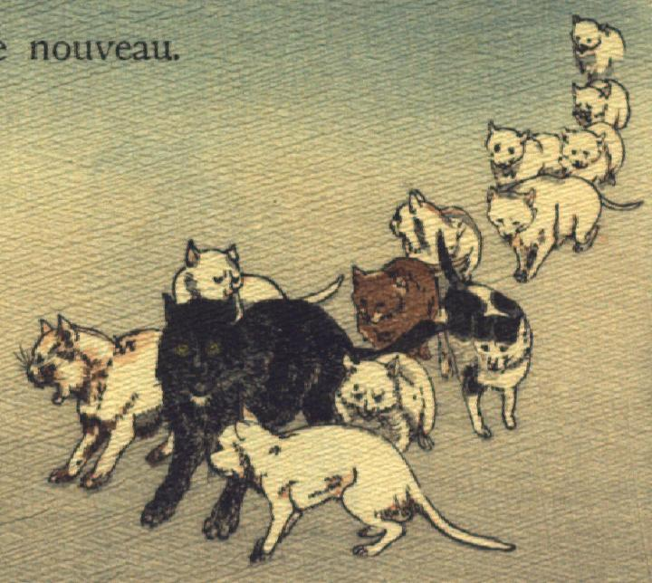

化け猫たち。13体の化け猫が群をなして歩いてくる。他の猫の倍ほど体が大きい、黒毛の猫が先頭に立っている。
著作者：J.Dautremer／出典：親書誌：U426_nichibunken_0102：Sippeïtaro／日付：2006／資源識別子：U426_nichibunken_0102_0003_0000
Copyright (c)2010- International Research Center for Japanese Studies, Kyoto, Japan. All rights reserved.